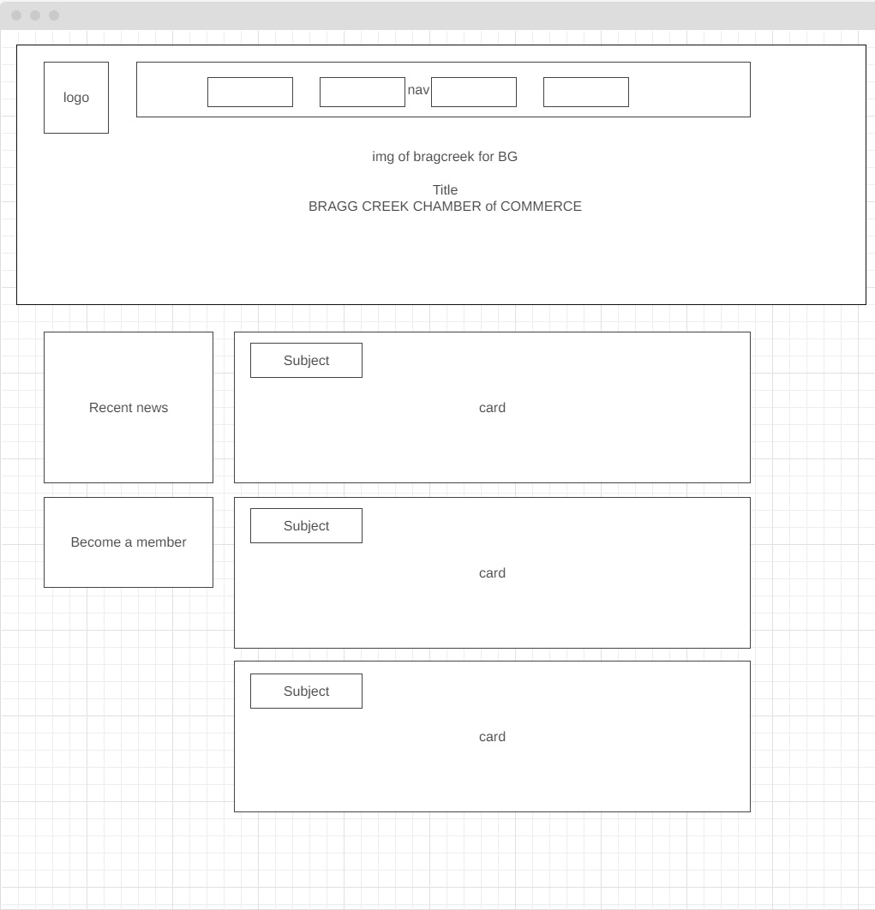

Bragg-Creek Chamber of Comerce
This section describes the primary purposes of the website.
This section outlines common scenarios or questions from site visitors.
This section defines the color scheme for the website and its usage.
Color 1 (Primary): Orange - Used for headings and accents.
Color 2 (Secondary): Blue - Used for background colors and links.
Color 3 (Page background): Off White - Used for mainbackground.
This section specifies the fonts to be used on the website and their application.
Primary Font: Roboto
Usage:
Secondary Font: sans-serif
Usage:
This section contains the wireframe for the website.
